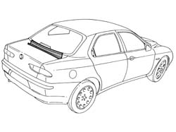
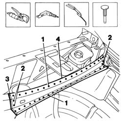
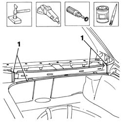
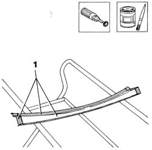
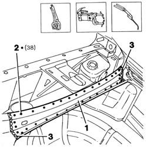
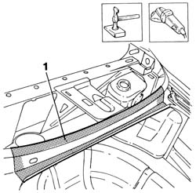
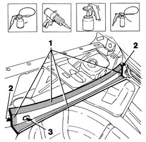

7210B25 windscreen base trim
- Path
- Procedures > 72 PANELS AND FRAME > 7210 REMOVING REFITTING > 7210B structure elements-central and rear part > 7210B25 windscreen base trim
- Kind
- repair procedure (removal / refitting; the operation number is the code)
- Applies to
- all engines; all production periods
- Interactive page
- https://sloeber94.github.io/elrnDB-a156/en/#/3239033
Applies to: all engines; all production periods
 Removing
Removing
 Refitting
RefittingCheck if any of the connected parts are deformed by checking body alignment dimensions. Use appropriate measurement tools (reference rigs, templates or gauges).
Straighten the body if necessary.

Applies to: all engines; all production periods
1. Use a chamfering machine to crop weld spots.
2. Drill out weld spots.
3. Use an oxyacetylene torch and steel brush to unweld welds at the corners.
Use a scalpel and mallet to remove spots ground previously.
4. Remove the beam at the base of the back window.

Applies to: all engines; all production periods
Straighten the beam seat panel edges at the base of the back window using a mallet and profiled stake.
Use a grinding wheel to remove the weld spot residues.
Use a rotary brush to clean the treated areas.
1. Apply the electric weld paint finish.

Applies to: all engines; all production periods
Use a rotary brush to remove the corrosion-proof treatment from around the inner and outer edges of the part.
1. Apply the electric weld paint finish to edges in contact with the car.

Applies to: all engines; all production periods
Refitting
Removing1. Fit the part correctly using self-locking clips.
2. Use a spot welder to weld the areas shown in the figure.
3. Use an oxyacetylene torch to hard-solder the roof corners of the back window base beam.

Applies to: all engines; all production periods
Correct any deformations in the panel using a profiled stake and mallet.
1. Use a grinding wheel to level weld residues and remove.

Applies to: all engines; all production periods
1. Apply rust-proofing to newly welded areas.
2. Apply sealant to the areas indicated in the figure.
Apply paint.
3. Apply wax oil inside the back window base beam.
